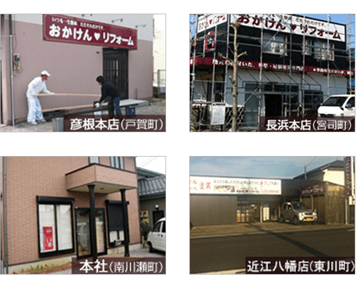

あなたの街のスーパーリフォーム店 おかけんリフォーム

事務所はボロくて、説明もあまり上手とは言えないが、しかし、腕は一流！
あなたの街のスーパーリフォーム店。同じ価格なら、絶対上手い！
「もっと、いいリフォームをしていこう」と、下請けを辞めた私がひとりで始めた会社。もちろん、トラブル・苦労もつきませんでした。疑われたことも、悔しかったこともありました。知り合いの業者さんが仕事がないからと言って、下請けをしてもらった時、下請けの業者さん達は手抜きの心得をよくご存知でした。以前下請けをやっていた私としては何とも言えない複雑な心境になりました。
だから、今はまじめな自社職人施工しかやっていません。それが一番安心できるからです。
「初心忘れるべからず。15年前の気持ちは今でも変っておりません。」
会社概要
- 商号
- 株式会社 おかけんリフォーム
- 本社
- 〒522-0222
彦根市南川瀬町1400-11
- 彦根本店
- 〒522-0042
滋賀県彦根市戸賀町130-25
- 長浜本店
- 〒526-0831
滋賀県長浜市宮司町909-2
- 近江八幡本店
- 〒523-0027
近江八幡市東川町189-2
- TEL（本社）
- 0749-25-0506
- FAX（本社）
- 0749-25-0909
- 沿革
- 平成8年5月
建築業・水道施設工事業で岡商店を設立
平成14年2月 有限会社岡建設となる
平成18年3月 おかけん建築士事務所 開設
- 資本金
- 500万円
- 代表取締役
- 岡 謙二（昭和40年彦根市に誕生）
- 営業種目
- 住宅塗装工事 住宅建築工事
住宅給排水工事 水道施設工事
建築士事務所 滋賀県知事登録
（い）2319号
建設業許可 滋賀県知事許可
（般－19）51619号
建築業、大工工事業、塗装工事業
とび・土木工事業、塗装工事業
屋根工事業、タイル工事業、内装工事業、管工事業、水道施設工事業、建具工事業、舗装工事業